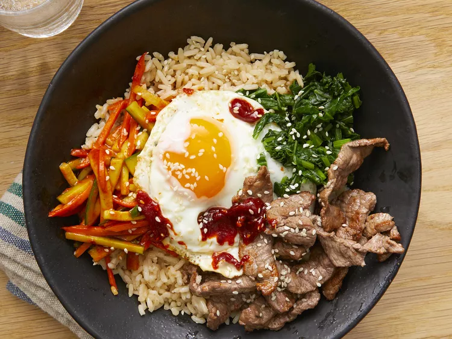

Bibimbap

This bibimbap recipe makes a popular and delicious Korean meal. Meaning mixed rice, bibimbap is a delicious rice bowl topped with vegetables, beef, a whole egg, and gochujang (red chili pepper paste). Traditionally, bibimbap was eaten on the eve of the Lunar New Year, to use up any leftovers before the start of the new year.
Ingredients
- 1 English cucumber, cut into matchsticks
- ¼ cup gochujang (Korean hot pepper paste) (Optional)
- 1 bunch fresh spinach, cut into thin strips
- 3 cups shredded mozzarella cheese, divided
- 1 tablespoon soy sauce
- 2 teaspoons olive oil, divided
- 2 carrots, cut into matchsticks
- 1 clove garlic, minced
- 1 pinch red pepper flakes
- 1 pound thinly-sliced beef top round steak
- 4 large eggs
- 4 cups cooked white rice
- 4 teaspoons toasted sesame oil, divided
- 1 teaspoon sesame seeds
- 2 teaspoons gochujang (Korean hot pepper paste), divided (Optional)
Directions
- Stir together cucumber pieces and gochujang paste in a bowl; set aside.
- Bring about 2 cups water to a boil in a large nonstick skillet and stir in spinach; cook until bright green and wilted, 2 to 3 minutes.
- Drain spinach and squeeze out as much moisture as possible; set spinach aside in a bowl and stir in soy sauce.
- Heat 1 teaspoon olive oil in a large nonstick skillet; cook and stir carrots until softened, about 3 minutes.
- Stir in garlic and cook just until fragrant, about 1 minute. Stir in cucumber mixture; sprinkle with red pepper flakes. Set carrot mixture aside in a bowl.
- Brown beef in a clean nonstick skillet over medium heat, about 5 minutes per side; set aside.
- Heat remaining 1 teaspoon olive oil in another nonstick skillet over medium-low heat. Fry eggs just on one side until yolks are runny, but whites are firm, 2 to 4 minutes.
- Divide cooked rice into 4 large serving bowls; top with spinach mixture, a few pieces of beef, and cucumber mixture. Place 1 egg atop each serving. Drizzle each bowl with 1 teaspoon sesame oil, a sprinkle of sesame seeds, and a small amount of gochujang paste if desired.